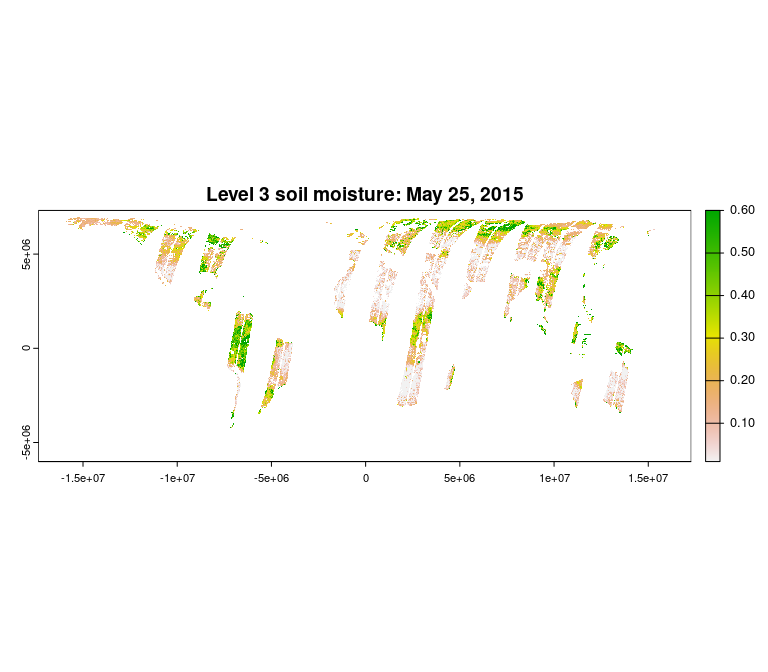

An R package for acquisition and processing of NASA (Soil Moisture Active-Passive) SMAP data
Installation
To install smapr from CRAN:
To install the development version from GitHub:
Docker instructions (alternative to a local installation)
If a local installation is not possible for some reason, we have made a Docker image available with smapr and all its dependencies, with instructions here: https://github.com/earthlab/dockerfiles/tree/master/smapr#how-to-use
Authentication
Access to the NASA SMAP data requires authentication through NASA’s Earthdata portal. If you do not already have a username and password through Earthdata, you can register for an account here: https://urs.earthdata.nasa.gov/ You cannot use this package without an Earthdata account.
Once you have an account, you need to pass your Earthdata username (ed_un) and password (ed_pw) as environmental variables that can be read from within your R session. There are a couple of ways to do this:
Recommended approach
Use set_smap_credentials('yourusername', 'yourpasswd'). This will save your credentials by default, overwriting existing credentials if overwrite = TRUE.
Alternative approaches
- Use
Sys.setenv()interactively in your R session to set your username and password (not including the<and>):
- Create a text file
.Renvironin your home directory, which contains your username and password. If you don’t know what your home directory is, executenormalizePath("~/")in the R console and it will be printed. Be sure to include a new line at the end of the file or R will fail silently when loading it.
Example .Renviron file (note the new line at the end!):
Once this file is created, restart your R session and you should now be able to access these environment variables (e.g., via Sys.getenv("ed_un")).
SMAP data products
Multiple SMAP data products are provided by the NSIDC, and these products vary in the amount of processing. Currently, smapr primarily supports level 3 and level 4 data products, which represent global daily composite and global three hourly modeled data products, respectively. There are a wide variety of data layers available in SMAP products, including surface soil moisture, root zone soil moisture, freeze/thaw status, surface temperature, vegetation water content, vegetation opacity, net ecosystem carbon exchange, soil temperature, and evapotranspiration. NSIDC provides documentation for all SMAP data products on their website, and we provide a summary of data products supported by smapr below.
| Dataset id | Description | Resolution |
|---|---|---|
| SPL2SMAP_S | SMAP/Sentinel-1 Radiometer/Radar Soil Moisture | 3 km |
| SPL3FTA | Radar Northern Hemisphere Daily Freeze/Thaw State | 3 km |
| SPL3SMA | Radar Global Daily Soil Moisture | 3 km |
| SPL3SMP | Radiometer Global Soil Moisture | 36 km |
| SPL3SMAP | Radar/Radiometer Global Soil Moisture | 9 km |
| SPL4SMAU | Surface/Rootzone Soil Moisture Analysis Update | 9 km |
| SPL4SMGP | Surface/Rootzone Soil Moisture Geophysical Data | 9 km |
| SPL4SMLM | Surface/Rootzone Soil Moisture Land Model Constants | 9 km |
| SPL4CMDL | Carbon Net Ecosystem Exchange | 9 km |
Typical workflow
At a high level, most workflows follow these steps:
- Find SMAP data with
find_smap() - Download data with
download_smap() - List data contents with
list_smap() - Extract data with
extract_smap()
Each of these steps are outlined below:
Finding SMAP data
Data are hosted on a server by the National Snow and Ice Data Center. The find_smap() function searches for specific data products and returns a data frame of available data. As data mature and pass checks, versions advance. At any specific time, not all versions of all datasets for all dates may exist. For the most up to date overview of dataset versions, see the NSIDC SMAP data version webpage.
library(smapr)
library(raster)
#> Loading required package: sp
available_data <- find_smap(id = "SPL3SMAP", date = "2015-05-25", version = 3)
str(available_data)
#> 'data.frame': 1 obs. of 3 variables:
#> $ name: chr "SMAP_L3_SM_AP_20150525_R13080_001"
#> $ date: Date, format: "2015-05-25"
#> $ dir : chr "SPL3SMAP.003/2015.05.25/"Downloading and inspecting SMAP data
Given a data frame produced by find_smap, download_smap downloads the data onto the local file system. Unless a directory is specified as an argument, the data are stored in the user’s cache.
downloads <- download_smap(available_data)
#> Downloading https://n5eil01u.ecs.nsidc.org/SMAP/SPL3SMAP.003/2015.05.25/SMAP_L3_SM_AP_20150525_R13080_001.h5
#> Downloading https://n5eil01u.ecs.nsidc.org/SMAP/SPL3SMAP.003/2015.05.25/SMAP_L3_SM_AP_20150525_R13080_001.qa
#> Downloading https://n5eil01u.ecs.nsidc.org/SMAP/SPL3SMAP.003/2015.05.25/SMAP_L3_SM_AP_20150525_R13080_001.h5.iso.xml
str(downloads)
#> 'data.frame': 1 obs. of 4 variables:
#> $ name : chr "SMAP_L3_SM_AP_20150525_R13080_001"
#> $ date : Date, format: "2015-05-25"
#> $ dir : chr "SPL3SMAP.003/2015.05.25/"
#> $ local_dir: chr "/home/max/.cache/smap"The SMAP data are provided in HDF5 format, and in any one file there are actually multiple data sets, including metadata. The list_smap function allows users to inspect the contents of downloaded data at a high level (all = FALSE) or in depth (all = TRUE).
list_smap(downloads, all = FALSE)
#> $SMAP_L3_SM_AP_20150525_R13080_001
#> group name otype dclass dim
#> 0 / Metadata H5I_GROUP
#> 1 / Soil_Moisture_Retrieval_Data H5I_GROUPTo see all of the data fields, set all = TRUE.
Extracting gridded data products
The extract_smap function extracts gridded data products (e.g., global soil moisture) and returns Raster* objects. If more than one file has been downloaded and passed into the first argument, extract_smap extracts all of the rasters and returns a RasterStack.
sm_raster <- extract_smap(downloads, "Soil_Moisture_Retrieval_Data/soil_moisture")
plot(sm_raster, main = "Level 3 soil moisture: May 25, 2015")
The path “Soil_Moisture_Retrieval_Data/soil_moisture” was determined from the output of list_smap(downloads, all = TRUE), which lists all of the data contained in SMAP data files.
Meta
- Please report any issues or bugs, after reading our contribution guidelines, and the Contributor Code of Conduct.
- License: GPL-3
- See
citation("smapr")in R to cite this package in publications.